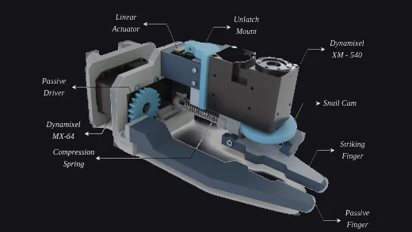
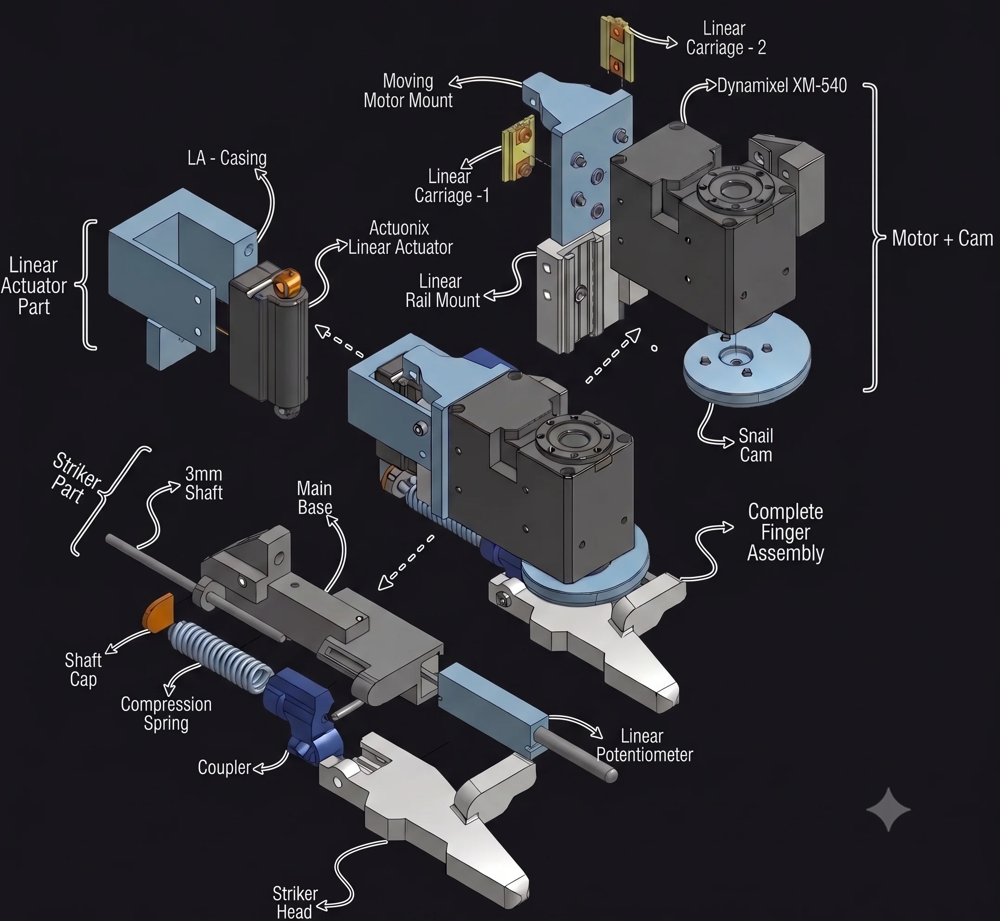
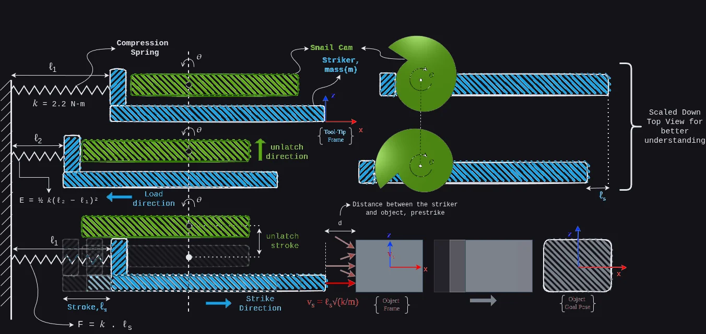
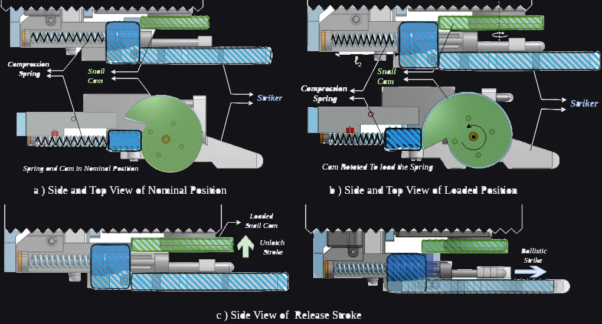
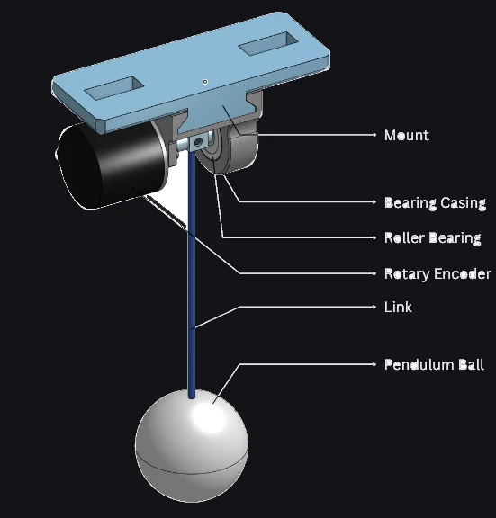
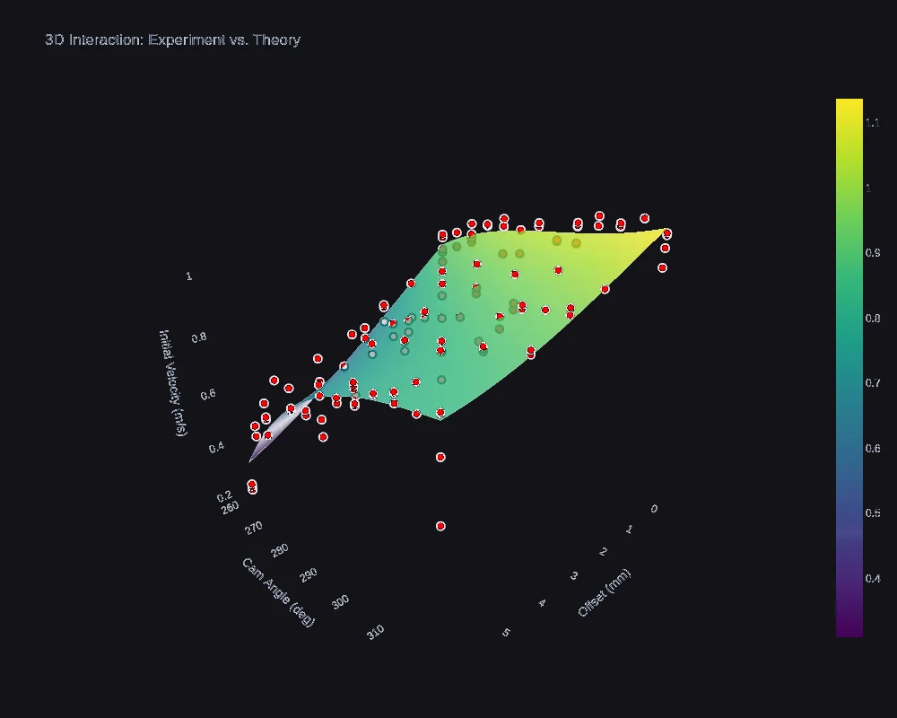
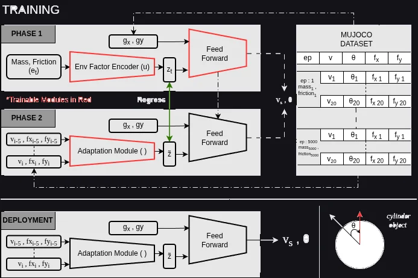
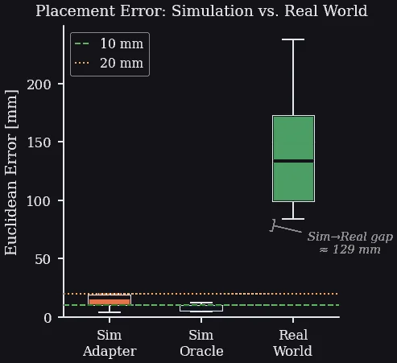

One end-effector, two skills: pick-and-place grasping and a high-speed strike, driven by a controller that adapts online to objects of unknown mass and friction.
demo video
Mechanical Design — a switchable end effector
Most robotic manipulation is quasi-static: grasp the object, carry it, set it down. Striking is a different regime. A short, controlled impact can send an object across a surface in a fraction of the time a pick-and-place cycle takes, and it works on objects a gripper can't reach or enclose. The catch is that striking demands tip speeds far beyond what a gripper motor produces in normal operation.
This end effector does both jobs with one actuator. A single Dynamixel XM-540 drives a modified two-finger gripper: for grasping, the moving digit simply clamps against the static finger. For striking, the same motor winds a snail cam that compresses a spring behind a latch, and a solenoid releases it. That release is a Latch-Mediated Spring Actuation (LaMSA) event, the same trick mantis shrimp and fleas use to move faster than muscle allows.

Isometric CAD — full assembly Full assembly — XM-540 drive, snail cam, latch-release solenoid, striker/finger assembly. File:img/isometric-cad-dark.webp
The striking finger breaks into three subassemblies. The motor + cam group carries the XM-540 and the snail cam on a pair of linear carriages, so the drive can translate as the cam winds. The linear actuator group holds an Actuonix micro linear actuator in a printed casing; it engages and disengages the latch. The striker group is the business end: a 3 mm steel shaft, compression spring, coupler, and striker head, with a linear potentiometer alongside reporting exactly how far the spring is compressed at any moment.
Every structural part is 3D-printed in PLA. That keeps the whole finger at 500 g, but the compliance of printed plastic shows up later in the sim-to-real results.

Exploded view — every part of the finger assembly Finger assembly broken into its parts: linear actuator, snail cam, motor mounts, striker head. File:img/exploded-view-transparent.webp
A motor fast enough to strike directly would be absurdly oversized for grasping. LaMSA decouples the two: the motor does slow, cheap work winding the spring through the snail cam, the latch holds the stored energy, and release happens in milliseconds at a tip speed the motor could never reach on its own. Strike velocity becomes a function of stored energy, not motor power.
The cam profile is the key part. Its radius grows gradually over one revolution, compressing the spring a little further per degree, then drops off sharply at the release point.

Working principle — spring compression → latch → ballistic release Spring compression → latch → release stroke, shown as a cam-position schematic. File:img/lamsa-working-principle-dark.webp
Because the cam compresses the spring progressively, stopping the wind-up at a chosen cam angle θ selects how much energy gets stored. The solenoid offset d shifts where along the stroke the latch lets go. Together, the pair (θ, d) fully determines a strike, which is what turns a biological trick into a controllable actuator.

In the mechanism — nominal, loaded & release stroke Side/top views of the cam in nominal position vs. loaded (spring compressed) position. File:img/lamsa-working-principle-2-dark.webp
System Identification — controls → strike velocity
The controller can command (θ, d), but the task cares about impact velocity. No datasheet maps one to the other: the relationship depends on the spring constant, friction along the shaft, latch behavior, and losses that are easier to measure than to model. So the map is identified empirically.
Measuring a millisecond-scale impact directly takes a high-speed camera. A pendulum takes a
protractor. The striker hits a pendulum of known mass and length, and its post-impact swing is
recorded. A two-phase solve_ivp fit first recovers the pendulum's own damping
parameters from free swings, then integrates back through the impact to recover the striker's
velocity at contact.
Repeating this across a grid of (θ, d) settings produces the dataset behind the velocity model.

Pendulum identification rig CAD + physical setup used to back out strike velocity from post-impact oscillation. File:img/pendulum-setup-dark.webp
A cubic polynomial in θ and d fits the measured velocities with R² = 0.910 and an RMSE of 0.058 m/s. At runtime the controller inverts this surface: given a desired impact velocity, it solves for the (θ, d) pair that produces it.

Fitted regression surface — (θ, d) → v₀ 3D surface mapping (θ, d) to strike velocity, with experimental points overlaid. File:img/regression-surface-dark.webp
Learning-Based Control — adapting to the unknown
Knowing the strike velocity is only half the problem. Where the struck object ends up depends on its mass and on the friction between it and the surface, and neither is known at deployment. Rather than estimate them explicitly, the controller borrows the Rapid Motor Adaptation recipe from legged locomotion.
In phase one, a base policy trains in MuJoCo with privileged access to the true mass and friction, compressed by an encoder into a small latent vector. In phase two, an AdapterNet learns to reconstruct that same latent using only what is observable on hardware: the outcomes of a short history of strikes.
At deployment the effector takes 5 exploratory strikes, the AdapterNet infers the latent, and the policy runs as if it had been told the object's properties all along.

Adaptive control architecture — privileged training, online adaptation Phase 1: privileged encoder + feed-forward policy. Phase 2: AdapterNet trained to reconstruct the same latent from strike outcomes. File:img/rma-architecture-dark.webp
Results — sim accuracy vs. the sim-to-real gap
In simulation, the adaptation works almost perfectly: the AdapterNet controller places objects within 0.81 mm of an Oracle controller that reads the true mass and friction directly. Whatever the five exploratory strikes reveal, it is enough to recover the privileged information. On the physical xArm-7 the story is honest rather than flattering: error grows to roughly 129 mm, driven by table-to-table friction variation, sensor noise, and flex in the PLA structure during impact.

Placement error — simulation vs. real world Box plots comparing the Adapter and Oracle controllers in simulation against real hardware trials. File:img/sim-to-real-results-dark.webp
img/striking-demo.mp4
What's next